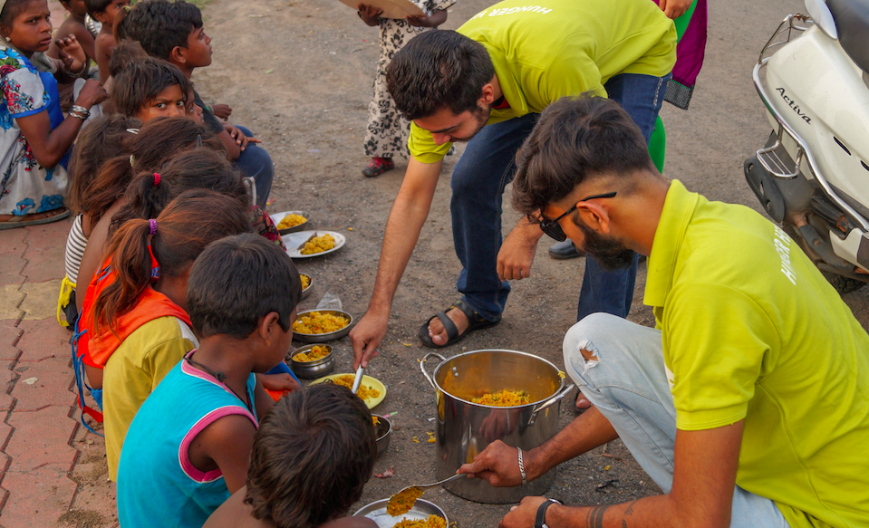
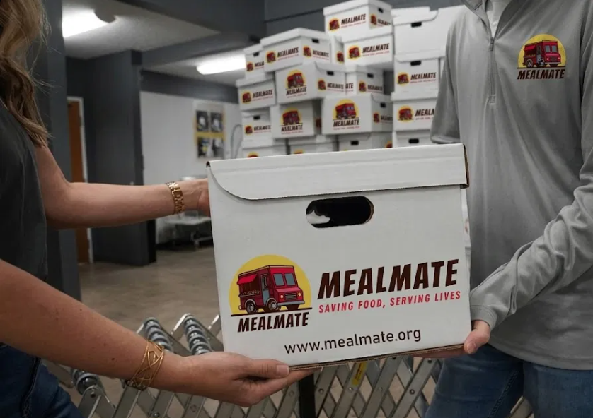

Reduce Food Waste. Track Every Donation. Verify Every Transaction.
MealMate connects restaurants, caterers, and bakeries with local NGOs so surplus food reaches people before it ever goes to waste — every donation tracked from pickup to delivery, with expiry rules enforced by a smart contract.
Saving Food, Serving Lives
In the field

Volunteers sorting same-day surplus for distribution.

Every handoff logged and verified end to end.
Recent Donations
Reads straight from the contract — no wallet required to view.
How it works
- A donor registers and lists surplus food with an expiry time.
- An approved NGO accepts the listing before it expires — the smart contract blocks expired food automatically.
- Both donor and NGO confirm pickup on-chain (dual confirmation), then the NGO marks the food distributed.
- Every donation gets a Food Passport — a QR code that anyone can scan to see its full, tamper-resistant history.